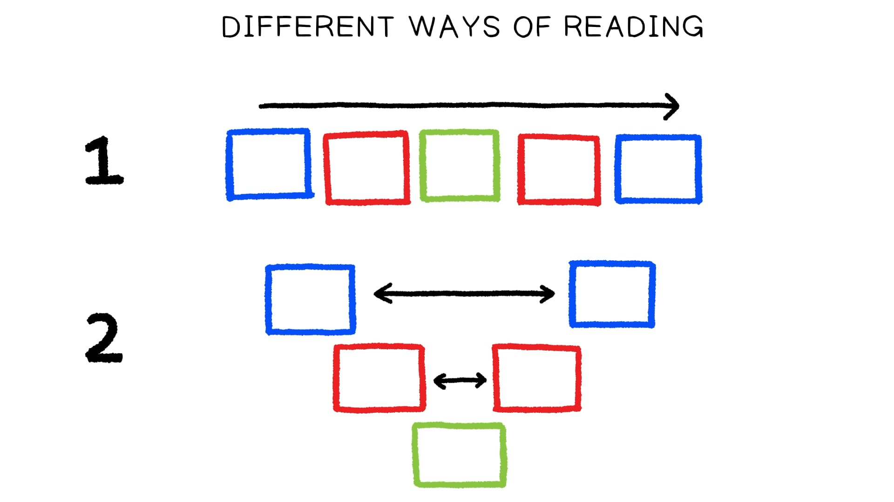

Gênesis 9:8-17 — Tradução e Design Literário por Tim Mackie (2020)Genesis 9:8-17. Translation and Literary Design by Tim Mackie for BibleProject Classroom: Adam to Noah (2020).
8E Elohim disse a Noé e aos seus filhos com ele, dizendo:And Elohim said to Noah and to his sons with him, saying, 9“E eu, eis que estabeleço a minha aliança convosco,“And I myself, behold, I set up my covenant with y’all, e com a vossa descendência depois de vós;and with your seed after you; 10e com todo ser vivente que está convosco,and with every living creature that is with you, as aves, os animais e todo ser vivente da terra convosco;the birds, the beasts, and every living creature of the land with you; de tudo o que sai da arca, até todo ser vivente da terra.from everything that comes out of the ark, even every living creature of the land. 11E estabeleço a minha aliança convosco;And I set up my covenant with y’all; e nunca mais toda carne será exterminada pelas águas do dilúvio,and never again will all flesh be cut off by the waters of the flood, e nunca mais haverá dilúvio para arruinar a terra.”and never again will there be a flood to ruin the land.” 12E Elohim disse: “Este é o sinal da aliança que douAnd Elohim said, “This is the sign of the covenant which I am giving entre mim e entre vós,between me and between you e entre todo ser vivente que está convosco, por gerações eternas;and between every living creature that is with you, for everlasting generations; 13ponho o meu arco na nuvem,I give my bow in the cloud, e ele será por sinal de aliançaand it will be for a sign of a covenant entre mim e entre a terra;between me and between the land; 14e acontecerá que, quando eu tragar uma nuvem sobre a terra,and it will come about when I cloud a cloud over the land, será visto o arco na nuvem,that it will be seen, the bow in the cloud, 15e lembrarei da minha aliança,and I will remember my covenant, que é entre mim e entre vóswhich is between me and between you e entre todo ser vivente de toda carne;and between every living creature of all flesh; e nunca mais as águas se tornarão dilúvio para arruinarand never again will the waters become a flood to ruin toda carne.all flesh.” 16E o arco está na nuvem,And the bow is in the cloud, então eu o verei,then I will see it, para lembrar da aliança eternato remember the everlasting covenant entre Elohim e todo ser vivente,between Elohim and between every living creature, com toda carne que está sobre a terra.”with all flesh that is on the land.” 17E Elohim disse a Noé: “Este é o sinal da aliançaAnd Elohim said to Noah, “This is the sign of que estabeleci entre mim e toda carne que está sobre a terra.”the covenant which I have set up between me and all flesh that is on the land.”A fala de Deus é desenhada com as características da poesia hebraica. Os elementos simetricamente pareados se iluminam mutuamente e aprofundam o significado através da semelhança e da diferença.God’s speech is designed with the features of Hebrew poetry. The symmetrically paired elements illuminate each other and deepen the significance through similarity and difference.
A frase final também é destacada por sua falta de um parceiro simétrico, identificando-a como uma declaração de clímax.The final sentence is also offset by its lack of a symmetrical partner, identifying it as a climactic statement.
Primeiro, lemos o texto e usamos padrões de cor para registrar todas as palavras-chave repetidas.First, let’s read the text and use color patterns to register all of the key repeated words.
A história parece um emaranhado de repetição, mas os temas principais e o arco de enredo da história são claros. A situação da mulher muda de morte e dívida para vida e abundância, tudo porque ela obedece à palavra do profeta. No entanto, se o leitor pondera (e memoriza) a história, recitando-a e dividindo-a em suas menores unidades literárias, as repetições caem em um arranjo literário sofisticado.The story seems like a jumble of repetition, but the main themes and the plot arc of the story are clear. The woman’s situation changes from death and debt into life and abundance, all because she obeys the word of the prophet. However, if the reader ponders (and memorizes) the story, reciting it and breaking it down into its smallest literary units, the repetitions fall into a sophisticated literary arrangement.
2 Reis 4:1-7 — Tradução e Design Literário por Tim Mackie (2019)2 Kings 4:1-7. Translation and Literary Design by Tim Mackie for BibleProject Classroom: Introduction to the Hebrew Bible (2019).
A 1 Ora, uma certa mulher das esposas dos filhos dos profetas clamou a Eliseu,1 Now a certain woman of the wives of the sons of the prophets cried out to Elisha, “Teu servo, meu marido, é morto,“Your servant my husband is dead, e tu sabes que teu servo temia a Yahweh;and you know that your servant feared Yahweh; e o credor veio tomar meus dois filhos para serem seus escravos.”and the lender has come to take my two children to be his slaves.” B 2 E Eliseu lhe disse, “Que te farei? Dize-me, que tens na casa?”2 And Elisha said to her, “What shall I do for you? Tell me, what do you have in the house?” E ela disse, “Tua serva não tem nada na casaAnd she said, “Your maidservant has nothing in the house exceto um jarro de óleo.”except a jar of oil.” C 3 E ele disse, “Vai, pede para ti vasos de fora,3 And he said, “Go, request for yourself vessels from outside, de todos os teus vizinhos, vasos vazios;from all your neighbors, empty vessels; não pegues poucos.do not get a few. 4 “E entrarás e fecharás a porta atrás de ti e de teus filhos,4 “And you shall go in and shut the door behind you and your sons, e derramarás em todos esses vasos,and you shall pour out into all these vessels, e apartarás o que estiver cheio.”and you shall set aside what is full.” C' 5 E ela saiu dele e fechou a porta atrás de si e de seus filhos;5 And she went from him and shut the door behind her and her sons; eles a traziam e ela derramava.they were bringing to her and she was pouring. 6 E aconteceu que, quando os vasos se encheram,6 And it came about when the vessels were full, B' ela disse a seu filho, “Traze-me outro vaso.”and she said to her son, “Bring near to me another vessel.” E ele lhe disse, “Não há outro vaso.” E o óleo parou.And he said to her, “There is not another vessel.” And the oil stopped. A' 7 E ela veio e contou ao homem de Deus, e ele disse,7 And she came and she told the man of God, and he said, “Vai, vende o óleo e paga teu credor,“Go, sell the oil and pay your lender, e tu e teus filhos podeis viver do resto.”and you and your sons can live on the rest.”Quando o leitor presta atenção à sequência narrativa e às repetições, torna-se claro que a história tem uma forma simétrica composta tanto de palavras-chave quanto de elementos de enredo/personagem (todos indicados na coluna à direita).When the reader pays attention to the narrative sequence and the repetitions, it becomes clear that the story has a symmetrical shape made up of both key words and plot/character elements (all indicated in the right column).
O leitor é convidado a ler a história em duas dimensões (assim como a poesia bíblica). A história pode ser lida (1) em uma sequência linear para frente e também (2) em uma sequência simétrica não linear.The reader is invited to read the story in two dimensions (just like biblical poetry). The story can be read (1) in a forward linear sequence and also (2) in a non-linear symmetrical sequence.
Assim como na poesia hebraica, cada parte correspondente da narrativa convida o leitor a comparar e contrastar cenas que se correspondem como se fossem linhas paralelas que se correspondem. Quando o leitor justapõe cenas paralelas, certos detalhes se tornam mais significativos.Just as in Hebrew poetry, each corresponding part of the narrative invites the reader to compare and contrast matching scenes as though they were matching parallel lines. When the reader juxtaposes parallel scenes, certain details become more significant.
A história se move da morte (A) para a vida (A’) e da potencial escravidão (A) para a liberdade (A’). Estas são imagens coordenadas importantes extraídas da narrativa do êxodo, onde morte e escravidão são o oposto de vida e libertação.The story moves from death (A) to life (A’) and from potential slavery (A) to freedom (A'). These are important coordinated images drawn from the exodus narrative where death and slavery are the opposite of life and liberation.
O agente-chave que transforma morte em vida é a palavra do profeta, que é chamado de “o profeta” (A) e “o homem de Deus” (A’).The key agent who turns death into life is the word of the prophet, who is called “the prophet” (A) and “the man of God” (A’).
A palavra de Deus através do profeta cria um teste de fé para a mulher. Ela confiará que Deus pode prover óleo (um alimento agrícola) do nada (B e B’)?The word of God through the prophet creates a test of faith for the woman. Will she trust that God can provide oil (an agricultural staple) out of nothing (B and B’)?
A casa e os jarros da mulher mudam de vazios (C) para cheios (C’) por causa de sua confiança no poder de Deus.The woman’s home and jars change from empty (C) to full (C’) because of her trust in God’s power.
Esta história é sobre como a palavra de Deus, através dos profetas, pode transformar morte em vida e criar abundância do nada, se apenas o povo de Deus confiar nele como criador.This story is about how the word of God, through the prophets, can turn death into life and create abundance out of nothing if only God’s people will trust him as creator.
Gênesis 39 — Tradução e Design Literário por Tim Mackie (2019)Genesis 39. Translation and Literary Design by Tim Mackie for BibleProject Classroom: Introduction to the Hebrew Bible (2019).
a 1 Ora, José foi levado para o Egito;1 Now Joseph had been taken down to Egypt; e Potifar o comprou:and Potiphar bought him: b um oficial de Faraó,an officer of Pharaoh, c o capitão (שר) da guarda,the captain (שר) of the bodyguard, c' um homem egípcio (מצרי איש),an Egyptian man (מצרי איש) c'' da mão dos ismaelitas,from the hand of the Ishmaelites, b' que o tinham levado para lá.who had taken him down there. a' 2 E Yahweh estava com José,2 And Yahweh was with Joseph, e ele se tornou um homem bem-sucedido (איש מצליח).so he became a successful man (איש מצליח). 3 E seu senhor viu que Yahweh estava com ele3 And his master saw that Yahweh was with him e que tudo o que ele fazia (כל אשר הוא עשה) Yahweh prosperava (מצליח) em sua mão.and how everything that he did (כל אשר הוא עשה) Yahweh made successful (מצליח) in his hand. 4 E José achou graça aos seus olhos (חן בעיניו) e o serviu,4 And Joseph found favor in his eyes (חן בעיניו) and he attended him, e o pôs sobre sua casa, e tudo o que era seu (כל יש לו) deu em sua mão.and he appointed him over his house, and everything that was his (כל יש לו), he gave into his hand. 5 E aconteceu que, quando o pôs sobre sua casa e sobre tudo o que era seu (כל אשר יש לו),5 And it came about when he appointed him in his house and over everything that was his (כל אשר יש לו), Yahweh abençoou a casa do egípcio por causa de José;Yahweh blessed the Egyptian’s house on account of Joseph; assim a bênção de Yahweh estava sobre tudo o que era seu (כל אשר יש לו), na casa e no campo.thus Yahweh’s blessing was upon everything that was his (כל אשר יש לו), in the house and in the field. 6 Assim ele abandonou (עזב) tudo o que era seu (כל אשר יש לו) na mão de José;6 So he abandoned (עזב) everything that was his (כל אשר יש לו) in the hand of Joseph; e não soube nada com ele, exceto o alimento que comia.and he did not know anything with him, except the food which he ate. E José era formoso de porte e formoso de semblante.And Joseph was beautiful of form and beautiful of sight. 7 E aconteceu depois destas coisas7 And it came about after these things que a mulher de seu senhor levantou seus olhos para José e disse: “Deita contigo.”and his master’s wife lifted her eyes toward Joseph and said, “Lie with me.” 8 E ele recusou8 And he refused e disse à mulher de seu senhor,and he said to his master’s wife, “Eis que meu senhor não sabe, comigo, o que há na casa,“Behold, my master does not know, with me, what is in the house, e tudo o que é seu (לו יש אשר כל) ele deu em minha mão.and everything that is his (לו יש אשר כל) he has given into my hand. 9 Não há ninguém maior na casa do que eu,9 There is no one greater in the house than me, e ele não me negou nada, exceto a ti, porque és sua mulher.and he has withheld nothing from me except you, because you are his wife. Como, pois, cometeria eu este grande mal e pecaria contra Deus?”And how could I do this great evil and sin against God?” 10 E aconteceu que, falando ela a José dia após dia,10 And it came about as she spoke to Joseph day after day, ele não a ouviu para deitar com ela, para estar com ela.he did not listen to her to lie with her, to be with her. 11 E aconteceu neste dia11 And it came about on this day que ele entrou na casa para fazer sua obra, e nenhum homem dos homens da casa estava ali na casa.that he went into the house to do his work, and no man from the men of the house was there in the house. 12 E ela o pegou pela sua roupa, dizendo: “Deita comigo!”12 And she seized him by his garment, saying, “Lie with me!” E ele abandonou (עזב)And he abandoned (עזב) sua roupa na mão dela e fugiu, e saiu.his garment in her hand and fled, and went outside. 13 E aconteceu que, quando ela viu13 And it came about when she saw que ele abandonou (עזב) sua roupa na mão delathat he abandoned (עזב) his garment in her hand e tinha fugido para fora,and had fled outside, 14 então ela chamou os homens de sua casa14 then she called to the men of her house e disse-lhes: “Vede, trouxe-nos um hebreu para zombar de nós;and she said to them, “Look, he has brought in a Hebrew to us to make fun of us; ele entrou a mim para deitar comigo, e eu levantei a voz e clamei.he came in to me to lie with me, and I cried out with a great voice. 15 E quando ouviu que levantei a voz e clamei, ele abandonou (עזב)15 And when he heard that I raised my voice and cried out, he abandoned (עזב) sua roupa junto a mim e fugiu e saiu.”his garment beside me and fled and went outside.” 16 Assim ela deixou sua roupa junto a si até que seu senhor veio à sua casa.16 So she rested his garment beside her until his master came to his house. 17 E falou-lhe com estas palavras: “O escravo hebreu que trouxeste a nós17 And she spoke to him with these words, “The Hebrew slave, whom you brought to us, entrou a mim para zombar de mim;came in to me to make fun of me; 18 e quando levantei a voz e clamei, então ele abandonou (עזב)18 and as I raised my voice and cried out, then he abandoned (עזב) sua roupa junto a mim e fugiu para fora.”his garment beside me and fled outside.” 19 E aconteceu que, quando seu senhor ouviu as palavras de sua mulher,19 And it came about when his master listened to the words of his wife, que ela lhe falava, dizendo: “Isto é o que teu escravo me fez,”which she spoke to him, saying, “This is what your slave did to me,” sua ira se acendeu.his anger burned hot. 20 E o senhor de José o tomou e o deu na casa da prisão, onde estavam os prisioneiros do rei.20 And Joseph’s master took him and gave him into the house of the prison, where the king’s prisoners were. 21 E Yahweh estava com José e lhe estendeu benevolência,21 And Yahweh was with Joseph and extended kindness to him, e lhe deu graça aos olhos (חן בעיניו) do capitão (שר) da casa da prisão.and gave him favor in the eyes (חן בעיניו) of the captain (שר) of the house of prison. 22 O capitão (שר) da casa da prisão deu na mão de José todos os prisioneiros na casa da prisão,22 The captain (שר) of the house of prison gave into the hand of Joseph all the prisoners in the house of the prison, e tudo o que eles faziam, ele o fazia (כל אשר עשים…הוא עשה).and everything they were doing, he was doing (כל אשר עשים…הוא עשה). 23 O capitão (שר) da casa da prisão não via nada em sua mão,23 The captain (שר) of the house of prison did not see anything in his hand visto que Yahweh estava com ele, e tudo o que ele fazia (אשר הוא עשה), Yahweh o prosperava (מצליח).in as much as Yahweh was with him, and whatever he was doing (אשר הוא עשה), Yahweh made it successful (מצליח).
Quais são alguns prós e contras de dividir passagens de acordo com suas estruturas? O que isso ajuda você a ver?What are some pros and cons of breaking passages down according to their structures? What does it help you see?
The biblical authors use repetition to package the information of a narrative in multiple layers of
an Egyptian man ()איש מצרי
)כל אשר יש לו,
6 So he abandoned ()עזב
abandoned ()עזב
successful ( )מצליח.